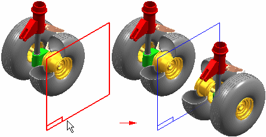
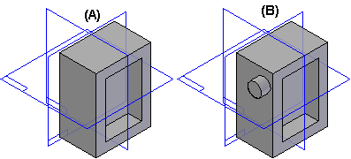
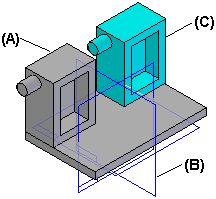
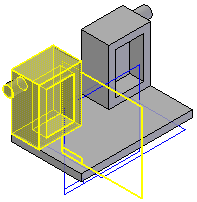
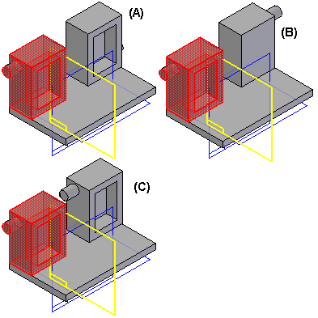

Mirror Components command
Mirror Components command
Mirror Components allows you to mirror selected components about a plane in the active assembly and are associative to their parent. Mirrored components use the insert assembly copy and inter-part copy functionality to create associative copies of the mirrored components.
Associative mirror functionality is available in ST5 and later versions. The old behavior (non associative mirror) is still available through the application program interface and delivered in the custom folder in the product directory.

The Mirror command bar guides you through the mirror process:
-
Select Components Step.
-
Select Mirror Plane Step.
-
Mirror Settings Step in the Mirror Components dialog box.
The Mirror Components dialog box allows you to specify the output options you want.
Selecting the components
After you define the mirror plane, you can select the components to mirror in the graphic window or Assembly PathFinder. When selecting parts in the graphic window, you can select individual parts, or you can define a fence to select a set of parts. You can mirror parts, subassemblies, or the entire assembly. To select an assembly, you must use Assembly PathFinder. When you finish selecting components, click the Accept button on the command bar or click the right mouse button.
Selecting the mirror plane
When mirroring components, you first select an existing assembly reference plane that defines the mirror plane you want.
Defining the mirror settings
When you accept the component set, the Mirror Components dialog box is automatically displayed so you can define the mirror settings you want. A preliminary copy of the mirrored components is also displayed in the graphic window. The Mirror Components dialog box allows you to define additional parameters for the set of components you are mirroring. For components that require a new document you can also define a destination folder and the template you want to use.
Determining component symmetry
Solid Edge analyzes each part to determine if it is symmetric or asymmetric. If you are mirroring a subassembly, the entire subassembly is also analyzed for symmetry. Components are analyzed for symmetry with respect to the three global and three principal axes by performing a physical properties calculation.
The results of the symmetry analysis are used to determine the initial settings on the Mirror Components dialog box. Symmetric components will have the Rotate action set and asymmetric components will have the Mirror action set. You can change these settings to get the result you want.
You should evaluate each component you are mirroring to determine whether the symmetry analysis meets your requirements.
If a component is symmetric about at least one of the three global reference planes, or one of the three principal physical properties axes, the component is considered symmetric for mirroring purposes.
For example, part (A) is considered symmetric because it is symmetric about at least one of the global reference planes. Part (B) is considered asymmetric because the small circular protrusion on the side of the part prevents it from being symmetric about any of the three global reference planes or any of the three principal physical properties axes.

Symmetric components
When a component is determined to be symmetric, the Action column on the Mirror Settings dialog box is set to Rotate for the component. The Adjust column specifies which axis or plane is used to rotate the part into the proper position.
When the Rotate action is set, the original document is reused and a new occurrence of the original component is placed in the assembly.
Asymmetric components
When a component is determined to be asymmetric, the Action column on the Mirror Settings dialog box is set to Mirror for the component. The options in the Adjust column are unavailable when the Action option is set to Mirror.
When the Mirror action is set, a new document name is specified in the Mirrored Components column, and a default folder is specified in the Create In column. The filename for the new document is derived from the original document name. For example, if the original document name was Part1.par, the new document name is Part1__mir.par.
Part copy technology is used to construct a mirrored copy of the geometry in the new document, and the mirrored geometry is associative to the original document. If you make design modifications to the original document, the geometry in the new document updates.
Although the Adjust options are unavailable when the Action column is set to Mirror, you can reposition a component manually after completing the mirror operation by applying assembly relationships.
Changing mirror component settings
For both symmetric and asymmetric components, you can override the system-applied settings in the Action and Adjust columns. For example, when mirroring an asymmetric component, you may want to reuse the original document, rather than a mirrored copy in a new document. To do this, change the setting in the Action column to Rotate, which also allows you to specify a plane of rotation in the Adjust column.
Examples of other situations where you may want to override the system-applied settings for the Mirror and Rotate actions:
-
Components that have threaded features. When you set the Mirror action for a part that has threaded features, the thread direction is reversed. You may want to set the Rotate option, then reposition the part after the mirror operation, if required.
-
Asymmetric components that will be replaced after the mirror operation. If you plan to immediately replace an asymmetric component with another existing, asymmetric component after the mirror operation, you can set the Rotate action to avoid creating a new document that is not required.
Adjusting component position
When you set the Action option to Rotate, another occurrence of the original component is placed in the assembly, and you can select an option in the Adjust column to change how the component is positioned in the assembly.
For example, you may want to position another occurrence of the asymmetric part (A) in the assembly by rotating it about reference plane (B), such that it is positioned as shown at (C).

Because the component is asymmetric, the Action option defaults to Mirror, which creates a new document and positions it as shown.

Since you want another occurrence of the original document, and not a new document with mirrored geometry, you first must change the Action option to Rotate. You can then set the Adjust options (A), (B) and (C) until the part is in the proper position (C).

To complete the mirror operation, click OK on the Mirror Settings dialog box, then click the Finish button on the command bar.
Drop
Selecting a mirror component and clicking drop on the shortcut menu removes the associativity and the components are placed in the active assembly and no longer a part of the mirrored component.
Virtual components
You cannot mirror or rotate virtual components. The Select Step will allow you to select them, but in the Mirror Settings dialog box, these components will be set to Omit and the row is disabled.
How do I
Build a pattern of parts in an assemblyDrop an assembly pattern
Mirror components in an assembly
Copy and paste assembly components
Learn more
Pattern, mirror, and copy components in assembliesLook up more details
Pattern Parts commandPattern Parts command bar
Duplicate Component command
Pattern Parts command bar
Drop Pattern command
Remove Override Body command
Mirror Components command bar (Assembly)
Mirror component options (Assembly)
Pattern Along Curve (assembly)
Related Topics
Along Curve pattern parts command (assembly)Along Curve pattern features command (assembly)